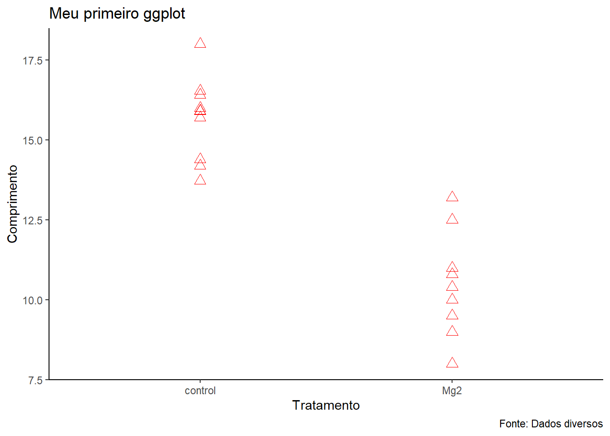
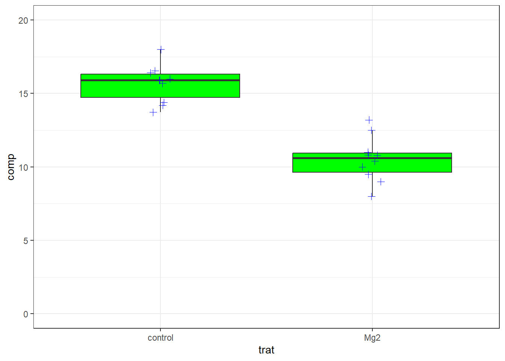

A importação de dados é um passo crucial na análise de dados, pois permite que você traga informações de várias fontes para dentro do ambiente R, onde podem ser limpas, manipuladas e analisadas. Com R, você pode importar dados de diversos formatos, como CSV, Excel, e até mesmo planilhas online do Google Sheets. Utilizar pacotes específicos para cada tipo de arquivo garante que os dados sejam lidos de maneira eficiente e sem erros.
Importando Dados de Pacotes
Muitas vezes, com o intuito de que o usuário possa testar algumas funções dos pacotes, estes pacotes possuem conjuntos de dados que podem ser importados ou carregados e utilizados.
A título de ensino, vamos começar com a instalação e carregamento do pacote ec50estimator, que é utilizado para estimativas de EC50 em análises biológicas. Neste pacote, utilizaremos o conjunto de dados multi_isolate.
library(ec50estimator)head(multi_isolate)
isolate field fungicida dose growth
1 1 Organic Fungicide A 0e+00 20.2082399
2 1 Organic Fungicide A 1e-05 20.1168279
3 1 Organic Fungicide A 1e-04 19.2479678
4 1 Organic Fungicide A 1e-03 15.8123455
5 1 Organic Fungicide A 1e-02 7.3206757
6 1 Organic Fungicide A 1e-01 0.6985264
Podemos atribuir os dados a um objeto, neste caso ao objeto df1 e usaremos a função View(df1) para abrir uma nova aba exibindo os dados. View() é particularmente útil para uma inspeção rápida dos dados em uma interface tabular.
df1 <- multi_isolateView(df1)
Leitura e Importação de Dados de Arquivos Excel
Outra opção é a importação de arquivos existentes no próprio computador do usuário, como arquivos de dados em Excel. Para a leitura e importação de dados em Excel, utilizaremos o pacote readxl, e para isso é necessário que instale e carregue este pacote.
O pacote readxl, que permite a leitura de arquivos Excel (.xlsx). Este pacote é especialmente útil para importar dados que são frequentemente armazenados em planilhas.
Para ler um arquivo Excel na pasta do projeto, use o comando read_excel("nome_do_arquivo.xlsx"), caso o arquivo esteja em outra pasta é necessário colocar, dentro dos parênteses, o caminho do arquivo antes do nome.
Se você precisar abrir uma planilha específica, como “escala”, utilize o argumento sheet. O segundo argumento é um parâmetro opcional, podendo ser o nome da aba ou apenas o número da aba sem aspas.
library(readxl)df2 <-read_excel("dados-diversos.xlsx")df21 <-read_excel("dados-diversos.xlsx", sheet ="escala")#Outras formas de abri e/ou atribuir abas específicas#df21 <- read_excel("dados-diversos.xlsx", "escala")#df21 <- read_excel("dados-diversos.xlsx", 2)
Leitura e Importação de Dados de Arquivos CSV
Outra opção, para arquivos CSV, é a utilização do pacote tidyverse, uma coleção de pacotes R para ciência de dados, incluindo readr para leitura de arquivos CSV. O tidyverse simplifica e uniformiza várias operações de manipulação de dados.
Neste caso utilizamos a função read_csv``("nome_do_arquivo.xlsx"), lembrando que, caso o arquivo esteja em outra pasta é necessário colocar o caminho do arquivo antes do nome.
library(tidyverse)
── Attaching core tidyverse packages ──────────────────────── tidyverse 2.0.0 ──
✔ dplyr 1.1.4 ✔ readr 2.1.5
✔ forcats 1.0.0 ✔ stringr 1.5.1
✔ ggplot2 3.5.1 ✔ tibble 3.2.1
✔ lubridate 1.9.3 ✔ tidyr 1.3.1
✔ purrr 1.0.2
── Conflicts ────────────────────────────────────────── tidyverse_conflicts() ──
✖ dplyr::filter() masks stats::filter()
✖ dplyr::lag() masks stats::lag()
ℹ Use the conflicted package (<http://conflicted.r-lib.org/>) to force all conflicts to become errors
df3 <-read_csv("dados-diversos.csv")
Rows: 60 Columns: 4
── Column specification ────────────────────────────────────────────────────────
Delimiter: ","
chr (1): Irrigation
dbl (3): rep, day, severity
ℹ Use `spec()` to retrieve the full column specification for this data.
ℹ Specify the column types or set `show_col_types = FALSE` to quiet this message.
Leitura e Importação de Dados de Arquivos do Drive Utilizando Google Sheets
Atualmente a utilização de drives em nuvem para salvar bancos de dados está amplamente difundida Isso é devido a facilidade de acesso aos dados, que pode ser feita de qualquer dispositivo, desde que se tenha acesso a internet.
Para utilizar um banco de dados diretamente do Google Drive, por exemplo, pode-se utilizar os pacotes gsheet e googlesheets4. O pacote gsheet permite a leitura rápida de Google Sheets usando URLs, enquanto o googlesheets4 oferece funcionalidade mais abrangente para leitura e escrita em Google Sheets.
No caso do pacote gsheet, a função utilizada para abrir e importar dados de arquivos no Google Drive é o gsheet2tbl(``"link_do_arquivo").
Para o pacote googlesheets4, o nome da função é read_sheet``("link_do_arquivo"). Ele permite não somente baixar, mas ele permite também escrever nos arquivos.
Para criar gráficos para análise exploratória das variáveis, utilizaremos o ggplot2, um dos pacotes mais populares do R para visualização de dados. A função geom_point mostra os pontos de uma variável, mas pode ocorrer destes pontos estarem sobrepostos, assim pode-se utilizar a função geom_jitter para desagregar os pontos.
Podemos adicionar camadas com o operador +, como geom_boxplot. A ordem das camadas determina como elas serão exibidas: a primeira camada chamada fica na parte inferior e as subsequentes são empilhadas acima.
Para evitar duplicação de outliers, utilize outlier.colour = NA.
Temas específicos também podem ser aplicados, como theme_bw() para um visual preto e branco utilizado em artigos cientificos, ou theme_classic.
library(ggplot2)g1 <- df4 |>ggplot(aes(trat, comp))+geom_point(color ="red", shape =2, size =3)g1 +theme_classic()+labs(x ="Tratamento", #Label do eixo xy ="Comprimento", #Label do eixo ytitle ="Meu primeiro ggplot", #Adiciona título ao gráficocaption ="Fonte: Dados diversos") #Adiciona fonte ao gráfico

g2 <- df4 |>ggplot(aes(trat, comp))+geom_boxplot(outlier.colour =NA,fill ="green")+geom_jitter(width =0.05,color ="blue",shape =3,size =2)g2 +theme_bw() +#ylim(0,20) #Outra opção para a função abaixoscale_y_continuous(limits =c(0,20),n.breaks =5) #n.breaks é o número de quebras, se colocar breaks apenas, fica só a linha correspondente aquele número.

Após a criação do gráfico, através do pacote ggplot2, podemos salvar os gráficos utilizando a função ggsave. A função ggsave é usada para salvar gráficos criados com ggplot2 em diferentes formatos de arquivo, como PNG, PDF, JPEG, entre outros. Isso é útil para documentar visualizações, compartilhar resultados ou incluir gráficos em relatórios e apresentações.
ggsave("plot1.png", bg ="white") #O parâmetro "bg" é a cor de fundo ou "background"
Saving 7 x 5 in image
Entendendo esses passos, você será capaz de importar dados de diversas fontes, realizar manipulações e criar visualizações ricas utilizando R e seus pacotes associados. Cada pacote desempenha um papel crucial na simplificação e eficiência das suas tarefas de análise de dados.